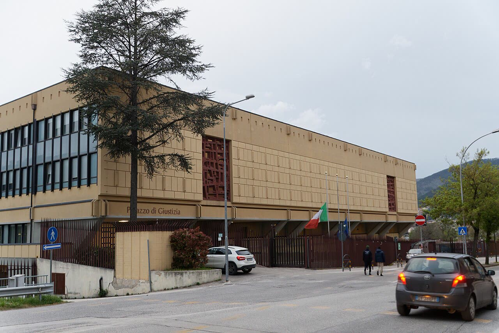

Famiglia nel bosco, il legale: la Corte d'Appello nega il rientro immediato
Il rientro a tappe va avanti: ora i giudici dicano entro quando finisce, e la politica smetta di promettere con la manovra ciò che solo un giudice può decidere.
Redazione Contrappunto · aggiornato il 13.11.2026


Dal 20 novembre 2025 i tre figli di una coppia anglo-australiana, che viveva in un casolare nel bosco a Palmoli, in provincia di Chieti, sono in una struttura protetta a Vasto: il Tribunale per i minorenni dell'Aquila ha sospeso la responsabilità genitoriale per le condizioni della casa, la salute e l'isolamento dei bambini. Il 1° settembre 2026 lo stesso Tribunale ha deciso un rientro a tappe: scuola pubblica, visite a casa, poi le notti del fine settimana. I genitori, difesi dall'avvocato ed ex senatore della Lega Simone Pillon, hanno chiesto alla Corte d'Appello il rientro immediato e l'istruzione parentale. Il 13 novembre Pillon ha annunciato che la Corte ha detto no; il testo della decisione non è pubblico. Conta perché tocca una domanda che riguarda ogni famiglia: per quanto tempo, e con quali regole, lo Stato può tenere i figli lontani da genitori che collaborano.
Vedi di più: 11 parole spiegate, cosa si racconta
Cosa si raccontaIl racconto più diffuso è che la Corte abbia lasciato i bambini lontani da casa. La Verità, nella rubrica «Giustizia al contrario», e il Giornale titolano «i bambini non tornano a casa»; Il Tempo, AGI e La Stampa che restano in casa famiglia. Tutte riprendono la stessa nota del difensore. Salvini parla di «violenza di Stato» e promette di intervenire «anche in questa legge di bilancio». Più cauti QN («no al ricongiungimento immediato») e LaPresse («no a un rientro completo»). [La Verità] [il Giornale] [Il Tempo] [AGI] [La Stampa] [ANSA] [Quotidiano Nazionale (QN)] [LaPresse]
- Tribunale per i minorenni
- Il tribunale che decide sulla tutela dei bambini: può sospendere la responsabilità dei genitori e affidare i figli ai servizi sociali o a una struttura.
- Corte d'Appello
- Il giudice di secondo grado: rivede le decisioni del Tribunale quando una parte le contesta.
- Reclamo e ricorso
- Contro un provvedimento del Tribunale per i minorenni si presenta un reclamo alla Corte d'Appello: è quello respinto. Il ricorso è quello che la difesa annuncia in Cassazione. Molti titoli parlano di «ricorso» anche per il reclamo.
- Cassazione
- La Corte suprema di Cassazione, a Roma: non rifà il processo, controlla che i giudici abbiano applicato bene la legge. La sua «giurisprudenza di legittimità» è l'insieme delle sue decisioni che orientano gli altri giudici.
- Responsabilità genitoriale sospesa
- I genitori non decidono più dove vivono i figli, quali cure ricevono e quale scuola fanno: lo fa un tutore nominato dal giudice, con i servizi sociali. Il legame con i figli non si interrompe, ma gli incontri li regola un terzo.
- Casa famiglia (collocamento extrafamiliare)
- Una comunità educativa che accoglie bambini allontanati dalla famiglia. Secondo la difesa, che richiama la Cassazione, dovrebbe essere una misura residuale, cioè l'ultima scelta, con una durata indicata chiaramente.
- CTU
- Consulenza tecnica d'ufficio: la perizia di un esperto scelto dal giudice, qui sulle capacità dei genitori. La difesa ne chiedeva la nullità.
- Istruzione parentale
- Studiare a casa invece che a scuola. In Italia è legale se si rispettano alcuni requisiti formali e si dimostra ogni anno che i bambini hanno raggiunto certi livelli di apprendimento (Pagella Politica). I genitori la vorrebbero riprendere.
- Udienza cartolare
- Un'udienza in cui i giudici decidono sugli atti scritti, senza le parti in aula a parlare.
- Corte europea dei diritti dell'uomo (CEDU)
- La corte di Strasburgo che giudica se gli Stati del Consiglio d'Europa, Italia compresa, rispettano la Convenzione europea dei diritti dell'uomo; l'articolo 8 protegge la vita familiare.
- Legge di bilancio
- La manovra: la legge con cui ogni anno il Parlamento decide entrate e spese dello Stato per l'anno dopo.
- Secondo la nota dell'avvocato Simone Pillon, legale della famiglia, la Corte d'Appello dell'Aquila ha respinto il reclamo dei genitori: niente rientro immediato né istruzione parentale. La decisione non è pubblica.
- Resta il rientro a tappe deciso a settembre: i bambini, in struttura a Vasto da novembre 2025, dormono dai genitori nel fine settimana.
- La difesa annuncia ricorso in Cassazione; Salvini parla di «violenza di Stato» e promette di intervenire «anche in questa legge di bilancio».
Il coro regge a metà. La Verità, nella rubrica «Giustizia al contrario», e il Giornale titolano che «i bambini non tornano a casa». Il reclamo non era contro un no: era contro un sì a tappe. I genitori volevano i figli a casa subito, con l'istruzione parentale. Il rientro graduale invece continua: da metà ottobre i bambini dormono dai genitori nel fine settimana. [8] [7] [12] [14]
Sei testate, una sola fonte: la nota del difensore. La decisione nessuno l'ha letta; solo QN avverte che «è la lettura del legale». Simone Pillon è stato senatore della Lega dal 2018 al 2022, e lo stesso giorno Salvini dice di aver «sentito l'avvocato Pillon». È una filiera, non due conferme. Nelle fonti lette Corte, Procura, servizi e Garante per l'infanzia non parlano. [9] [1] [23]
Le ragioni dei giudici sono serie. Nell'ordinanza del novembre 2025, letta da Pagella Politica, la casa era un «rudere fatiscente e privo di utenze», le visite dei servizi erano state impedite, e il problema non era la scuola ma la «vita di relazione» dei bambini. [17]
Anche quelle dei genitori lo sono. I figli sono in struttura da quasi un anno e, secondo la difesa e Salvini, la coppia ha detto sì a casa nuova, scuola pubblica e servizi. La Corte europea dei diritti dell'uomo, condannando l'Italia nel 2015 per un caso di adozione, più grave di questo, ha ricordato che i legami tra figli e genitori si spezzano solo in circostanze eccezionali. L'udienza del 3 novembre si è fatta sulle carte, anche se la difesa chiedeva di essere sentita. E a settembre il rientro definitivo era previsto «in data da definirsi». [9] [1] [22] [13] [12] [15]
Il nostro punto, ed è un'opinione. Educare i figli a modo proprio è una libertà vera; proteggerli quando i genitori non ce la fanno è un dovere dello Stato. Se il collocamento restasse senza un termine scritto, diventerebbe una misura che nessuno deve più giustificare. I genitori, secondo la difesa, hanno accettato il piano di settembre: ora i giudici dicano con quale criterio ed entro quando il rientro sarà pieno, e chi ne risponde se si allunga. Le motivazioni vanno rese pubbliche, senza nomi. E la politica si fermi: una manovra non riscrive la decisione su una famiglia. [1]
La verifica punto per punto20 passaggi, 23 fonti
Qui sotto ogni cosa scritta sopra, una per una, con le fonti. Confermato: lo dice un documento originale o più fonti lette. Plausibile: lo riportano fonti serie, ma non abbiamo letto l'originale. Discordante: le fonti danno numeri diversi, e diciamo quali. Ipotesi e Opinione sono il nostro ragionamento, separato dai fatti.
Cosa è successo
Il 13 novembre l'avvocato Simone Pillon, legale dei genitori, ha annunciato in una nota: «Come purtroppo prevedibile viste le precedenti conferme, la Corte di Appello dell'Aquila ha deciso di rigettare il reclamo». È l'unica fonte: la decisione non è pubblica e Corte, Procura e servizi tacciono. È plausibile perché la difesa la annuncia contro il proprio interesse e nessuno smentisce.
Il reclamo, depositato il 10 settembre, era contro il provvedimento del Tribunale per i minorenni del 1° settembre che disponeva il ricongiungimento a tappe. La difesa chiedeva la nullità della perizia, «l'immediato rientro in famiglia dei piccoli e l'ammissione del progetto educativo di home schooling», e un'udienza con le parti presenti.
L'udienza del 3 novembre in Corte d'Appello è stata «cartolare», cioè solo sugli atti scritti.
Il contenuto si conosce solo dalla difesa. Per Pillon la Corte ha confermato la perizia, ha respinto le censure su salute e scuola e non ha considerato la giurisprudenza «sulla residualità del collocamento extrafamiliare e sulla necessità che siano chiaramente indicati i termini della sua durata». Sono gli stessi motivi del reclamo.
La difesa annuncia ricorso in Cassazione «nei prossimi giorni». È un annuncio: la sera del 13 il ricorso non risulta depositato.
Il rientro a tappe va avanti
I bambini sono in una struttura a Vasto dal 20 novembre 2025. Il piano di settembre prevede scuola pubblica, visite di giorno a Palmoli e, da ottobre, le notti del fine settimana: la prima tra il 17 e il 18 ottobre, «senza la presenza degli assistenti sociali», nella casa data dal Comune. Il rientro definitivo, scriveva AGI, era «in data da definirsi».
Per Pillon la Corte «ha tuttavia confermato il piano di rientro graduale già in essere e che sta procedendo»: è coerente con il rigetto. A settembre lo stesso Pillon lo chiamava «un significativo passo in avanti».
Chi parla, e chi tace
Pillon è stato senatore della Lega dal 2018 al 2022 e vicepresidente della Commissione parlamentare per l'infanzia. Nessuna delle testate lette per intero lo ricorda.
All'Aquila il vicepremier Matteo Salvini ha detto: «Ho sentito l'avvocato Pillon e faremo tutto quello che è normativamente possibile anche in questa legge di bilancio per porre fine a una violenza di Stato che fa il male di quei bambini e di quella famiglia». E: «Quella mamma e quel papà hanno detto di sì a tutto». Lo riporta solo ANSA.
Tutte le testate riprendono la nota di Pillon; La Stampa ricopia ANSA parola per parola. Solo QN avverte: «È la lettura del legale, in attesa di esaminare le motivazioni». Nelle fonti lette non parlano Corte, Procura, servizi, Comune né Garante per l'infanzia.
La Verità titola «i bambini non tornano a casa», come il Giornale, nella rubrica «Giustizia al contrario», e dentro le virgolette di Pillon cambia «Corte di Appello» e toglie un cognome.
Le ragioni dei giudici
Secondo Pagella Politica, che ha letto l'ordinanza del 20 novembre 2025, i servizi riferivano visite interrotte e accessi impediti. La casa era un «rudere fatiscente e privo di utenze». E i giudici precisano: «l'ordinanza cautelare non è fondata sul pericolo di lesione del diritto dei minori all'istruzione, ma sul pericolo di lesione del diritto alla vita di relazione». Il 6 marzo 2026 la madre è stata trasferita fuori dalla struttura «dopo contrasti con la direzione della casa famiglia» (AGI).
Il 19 dicembre 2025 la Corte d'Appello aveva già confermato l'allontanamento: le «precedenti conferme» di Pillon riguardano altri provvedimenti, non il rientro a tappe.
Sulla pronuncia del 30 aprile 2026 le versioni divergono: per Avvenire riguardava l'allontanamento della madre dalla struttura, per LaPresse la permanenza dei figli; e secondo i legali di allora il ricorso era stato rimesso al Tribunale, non respinto. Il provvedimento non è pubblico.
Le ragioni dei genitori
Nel 2015 (Akinnibosun c. Italia) la Corte europea dei diritti dell'uomo ha condannato l'Italia per violazione della vita familiare, richiamando anche il caso Zhou del 2014: le misure che spezzano i legami tra un figlio e la sua famiglia vanno applicate solo in circostanze eccezionali. Era un caso di adottabilità, più grave di questo.
Secondo la difesa (QN), i genitori collaborano con i servizi e hanno accettato la scuola pubblica; vivono in una casa del Comune di Palmoli. Nessuna fonte letta conferma da sola la frequenza scolastica.
Tra le righe
Il rigetto non cambia il calendario dei bambini: nega l'accelerazione e lascia il piano di settembre. Il nodo vero è la data del rientro pieno, che nessuno ha reso pubblica.
Ragionamento: Il reclamo chiedeva il rientro immediato (ANSA 10/9); per Pillon il piano a tappe è confermato; ad AGI il 1° settembre la data era «da definirsi» e il 13/11 Pillon lamenta che manchino i termini. Senza il testo della decisione non sappiamo se un termine ci sia.
Salvini non ha indicato quale norma. Una manovra non annulla il provvedimento di un giudice su una famiglia: quello si contesta davanti a un altro giudice.
Ragionamento: La frase di Salvini (ANSA) non cita un articolo né un testo; i provvedimenti minorili si impugnano con reclamo e ricorso, la via seguita dalla difesa (ANSA 10/9 e 13/11).
La notizia arriva incorniciata da una parte: il difensore, ex parlamentare del partito del vicepremier che la commenta. Questo spiega perché si legge di bambini che «non tornano a casa» e poco del rientro.
Ragionamento: Sei testate su sei riprendono la nota; il Valutatore conta 7 omissioni per La Verità e 5 per La Stampa, tra cui il rientro in corso o l'oggetto del reclamo; il legame politico è documentato, l'effetto sul racconto è un'inferenza.
Il nostro punto
Secondo la difesa i genitori hanno accettato il piano di settembre: dopo un anno, il collocamento ha bisogno di una data e di un criterio scritti, e di qualcuno che ne risponda se si allunga. Le motivazioni vanno rese pubbliche in forma anonima. E la manovra lasci stare i tribunali: un caso si decide con le prove, non con la legge di bilancio.
Fonti23, tutte con il link
- Pillon: 'Rigettato il ricorso della famiglia del bosco'. No al rientro definitivo dei bimbi (13 novembre 2026; contiene anche le parole di Salvini) (ANSA) · consultata il 13.11.2026
- Famiglia nel bosco, i bimbi non tornano a casa: rigettato il ricorso dei genitori (13 novembre 2026) (Adnkronos) · consultata il 13.11.2026
- Famiglia nel bosco, ricorso respinto: bimbi in casa famiglia (13 novembre 2026) (AGI) · consultata il 13.11.2026
- Famiglia nel bosco, rigettato il ricorso dei genitori: no a un rientro completo dei bambini (13 novembre 2026) (LaPresse) · consultata il 13.11.2026
- «Rigettato il ricorso della famiglia del bosco»: i bambini per ora non tornano a casa (13 novembre 2026) (La Stampa) · consultata il 13.11.2026
- Famiglia nel bosco, respinto il ricorso: i bambini restano in casa famiglia (13 novembre 2026) (Il Tempo) · consultata il 13.11.2026
- Famiglia del bosco, rigettato il ricorso dei genitori. I bambini non tornano a casa (13 novembre 2026) (il Giornale) · consultata il 13.11.2026
- Famiglia del bosco, respinto il ricorso: i bambini non tornano a casa (13 novembre 2026, rubrica «Giustizia al contrario») (La Verità) · consultata il 13.11.2026
- Famiglia nel bosco, no dei giudici al ricongiungimento immediato (Alessandro Da Rold, 13 novembre 2026) (Quotidiano Nazionale (QN)) · consultata il 13.11.2026
- Famiglia nel bosco, i bambini restano in casa famiglia: la Corte d'appello respinge il ricorso. Confermato il rientro a tappe dai genitori (13 novembre 2026; dietro abbonamento, letto solo il testo visibile) (Il Messaggero) · consultata il 13.11.2026
- Famiglia nel bosco: reclamo respinto, si va in Cassazione (13 novembre 2026; dietro registrazione, letto il testo visibile) (Il Fatto Quotidiano) · consultata il 13.11.2026
- Famiglia nel bosco, legale deposita il reclamo in Corte d'Appello (lancio ANSA del 10 settembre 2026, ripreso da L'Adige) (L'Adige / ANSA) · consultata il 13.11.2026
- Pillon, 'sulla famiglia del bosco decisione nelle prossime settimane' (lancio ANSA del 3 novembre 2026, ripreso da il Nord Est) (il Nord Est / ANSA) · consultata il 13.11.2026
- Famiglia nel bosco, 16 giorni per sperare nel ricongiungimento (18 ottobre 2026) (AGI) · consultata il 13.11.2026
- Famiglia nel bosco, i giudici: 'Sì al ricongiungimento graduale' (1 settembre 2026) (AGI) · consultata il 13.11.2026
- Famiglia nel bosco: il Tribunale decide per il rientro graduale (1 settembre 2026) (Open) · consultata il 13.11.2026
- Famiglia nel bosco: la verità sulla decisione dei giudici (Marco Bellandi Giuffrida, 24 novembre 2025; ricostruisce l'ordinanza del 20 novembre 2025, che la testata ha letto) (Pagella Politica) · consultata il 13.11.2026
- I tre bambini della famiglia nel bosco per ora restano in comunità (19 dicembre 2025) (Avvenire) · consultata il 13.11.2026
- La famiglia del bosco, la decisione della Corte d'appello e la politica che strumentalizza (commento, 19 dicembre 2025; dietro abbonamento, letti il sommario e l'attacco) (Domani) · consultata il 13.11.2026
- Famiglia nel bosco, respinto il ricorso dei legali della famiglia (30 aprile 2026) (Avvenire) · consultata il 13.11.2026
- Famiglia nel bosco, la Corte d'Appello dell'Aquila rigetta il ricorso dei genitori: i bambini restano in casa famiglia (30 aprile 2026) (LaPresse) · consultata il 13.11.2026
- Corte europea dei diritti dell'uomo, Akinnibosun c. Italia, ricorso n. 9056/14, sentenza del 16 luglio 2015 (testo francese, Osservatorio CEDU della Camera dei deputati) (Camera dei deputati) · consultata il 13.11.2026
- Simone Pillon (voce di Wikipedia: senatore dal 23 marzo 2018 al 12 ottobre 2022, gruppo Lega) (Wikipedia) · consultata il 13.11.2026